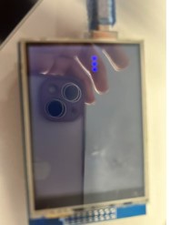
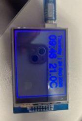
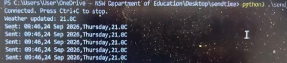
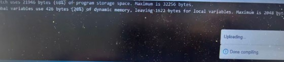

Arduino UNO
For my Arduino Information Display Common Task, I have built a working Arduino that takes information from websites and my computer to send information to the Arduino and return the outputs. My Arduino is personalised to be mine with a unique style, and includes extra features to make it look good.
At the start, I had trouble with changing the original code into a style I wanted it to be. However, after learning how showmsgXY works and experimenting with the values of x, y, and size, I was able to make the day, date, and time look good. After that, I changed the colour to blue to make it look better for me and added a “|” between the day and date texts to make it look better. Additionally, I have added a rectangle around the entire screen to make it look good (credits to Frank). Finally, I followed the instructions on google classroom and added a weather system to my entire clock design.
However, throughout all of this, I have encountered many challenging situations. The 1st one was when exit status 1 came up a lot, and I learnt that all it meant was I had to disconnect and reconnect my Arduino. Additionally, reuploading my Arduino code gave errors multiple times, and Andrew helped me figure out that my running python script was causing these issues. The most painful issue was wondering how my code showed errors after directly copy pasting from google classroom. It showed ‘&’ instead of just ‘&’. Because of this, I got rid of all the useless amps and fixed the code. Furthermore, I had no problems with my code, but when I tried to run the python script, nothing showed up. I solved this by asking EduChat how to solve it and after some time, it finally worked. Ultimately, through all the struggles and challenges, I have learnt more about programming and Arduino’s and built a design I was happy with.
Due to lack of time, I wasn’t able to fill in the bottom half of the screen. However, if I had extra time, I would fill in the space with a cube and some diamonds for extra decoration. I would do this by learning how to draw the lines and do more experimenting to make the decorations look good. In conclusion, I have built an Arduino Information Display with a unique cover page of “...” and a unique clock which showed the day, date, time, and weather with colour decoration and a cool rectangle around the Arduino. Through all the hard work and challenges I faced, I was able to overcome them and learn new things through them.
Below is some images I took of my code working, and Arduino screens:



